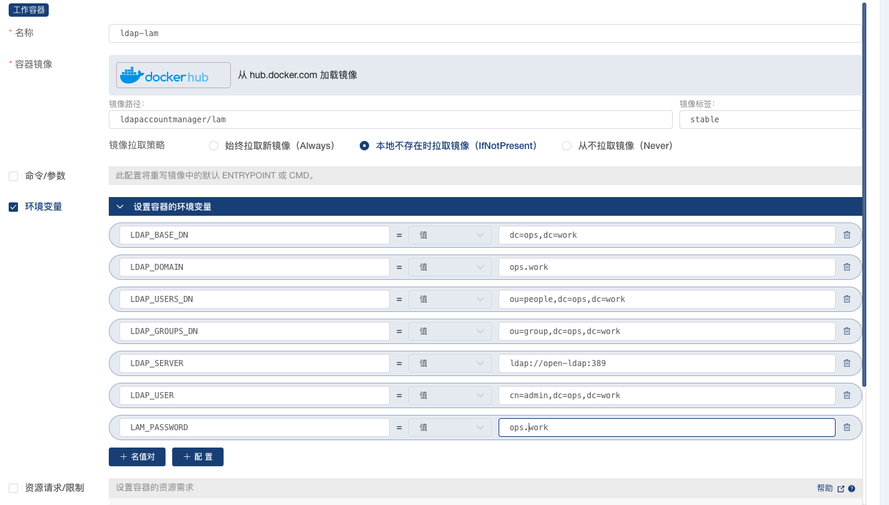
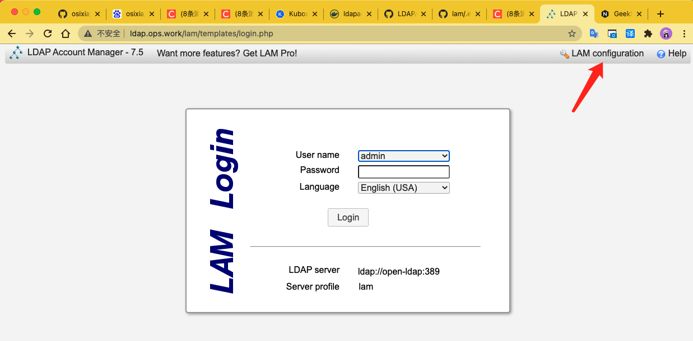
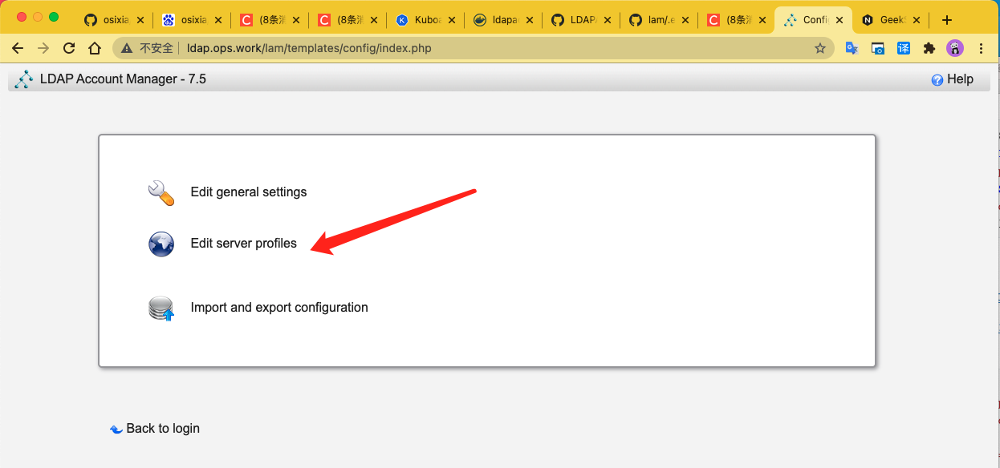
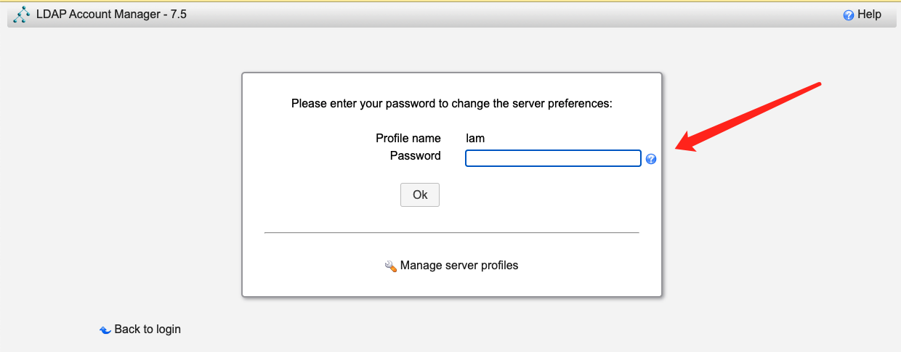
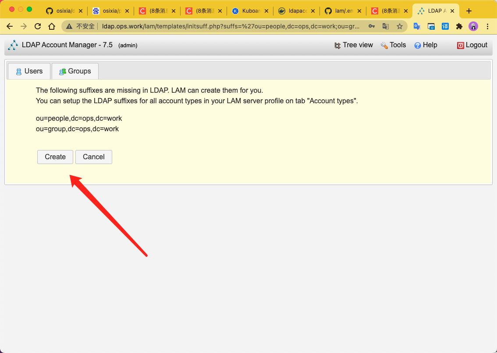
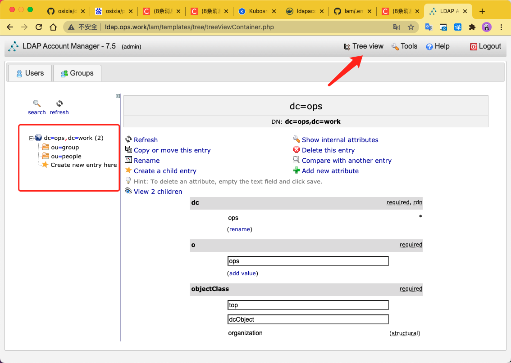

Docker部署LDAP，安装LDAP Account Manager (LAM)来网页端管理user和group
OpenLDAP官网：https://www.openldap.org/
LDAP Account Manager官网：https://www.ldap-account-manager.org/lamcms/
可参考https://github.com/osixia/docker-openldap
docker run -d -p 389:389 --name open-ldap \
--env LDAP_ORGANISATION="ops" \
--env LDAP_DOMAIN="ops.work" \
--env LDAP_ADMIN_PASSWORD="*****" \
--env LDAP_BASE_DN="dc=ops,dc=work" \
--detach osixia/openldap:1.5.0
可参考https://github.com/LDAPAccountManager/lam
环境变量请参考：https://github.com/LDAPAccountManager/lam/blob/develop/lam-packaging/docker/.env
docker run -d -p 80:80 --name ldap-lam \
--env LDAP_DOMAIN="ops.work" \
--env LDAP_BASE_DN="dc=ops,dc=work" \
--env LDAP_USERS_DN="ou=people,dc=ops,dc=work" \
--env LDAP_GROUPS_DN="ou=group,dc=ops,dc=work" \
--env LDAP_SERVER="ldap://open-lan:389" \
--env LDAP_USER="cn=admin,dc=ops,dc=work" \
--env LAM_PASSWORD="*****" \
--detach osixia/openldap:1.5.0
我是部署在k8s里，环境变量配置如下：






完工，嘻嘻😝